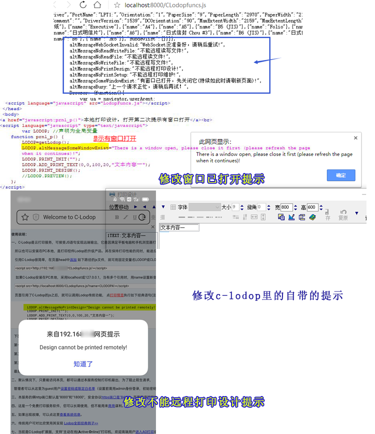

如何修改c-lodop里的自带的提示
访问http://localhost:8000/CLodopfuncs.js，可以看到c-lodop安装启动成功后的该CLodopfuncs.js，里面有打印机和纸张和打印方法等，也有一些c-lodop的自带的提示，如如果连续打开窗口，会提示窗口已打开等，非本地打印调用打印设计、维护、写入文件，会提示不能远程XXX。
里面的提示是中文的，如果需要英文或修改提示，clodopFuncs.js是动态生成的，虽然不能直接修改clodopFuncs.js，但是可以再用JS覆盖掉之前的提示值，修改该值。
本地打印时，在打印设计已打开的情况下，缩小打印设计窗口，再次点击打印设计，连续执行了两次打印设计，会提示窗口已打开，默认提示是——有窗口已打开，先关闭它(持续如此时请刷新页面)!
网上找中英互译，机器翻译了一个英文，把该提示 修改成英文（代码）：
<script language="javascript" src="LodopFuncs.js"></script> </head> <body> <a href="javascript:prn1_p()">本地打印设计，打开第二次提示有窗口打开</a><br> <script language="javascript" type="text/javascript"> var LODOP; //声明为全局变量 function prn1_p() { LODOP=getLodop(); LODOP.altMessageSomeWindowExist="There is a window open, please close it first (please refresh the page when it continues)!"; LODOP.PRINT_INIT(""); LODOP.ADD_PRINT_TEXT(0,0,100,20,"文本内容一"); LODOP.PRINT_DESIGN(); //LODOP.PREVIEW(); }; </script>
后两种角色中集中打印角色时，这边用局域网集中打印（http://192.168.XX.XX:8000/CLodopfuncs.js），手机向电脑发送任务，直接用欢迎页面测试，修改默认的值，不能远程打印设计，还是网上找的机器翻译的（代码）：
LODOP.altMessageNoPrintDesign="Design cannot be printed remotely!"; LODOP.PRINT_INIT(""); LODOP.ADD_PRINT_TEXT(0,0,100,20,"文本内容一"); LODOP.PRINT_DESIGN();
测试效果：
c-lodop自带的默认提示被修改了。
图示：
